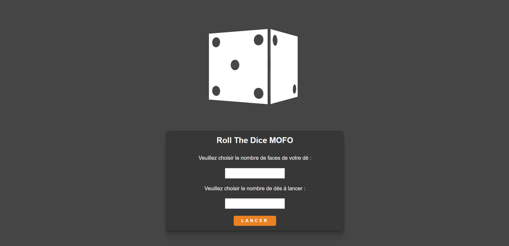

Ce que je fais ?
Une formation de développeur web chez Simplon
Écris du code avec passion
Teste toujours mon code
Suis à la lettre les dernières pratiques en matière de sécurité
Commente toujours mon code
N'arrête jamais d'apprendre
Bois du café
Ce que je sais ?
Utiliser les langages HTML5, CSS3, JS et PHP afin de concevoir des sites web
Créer une base de donnée
Faire bon usage du CRUD
Créer des maquettes avec des outils tels que Figma et Miro
Utiliser des API
Controler des animations réalisées en CSS et JS
Extraire et afficher des données provenants d'un fichier JSON
Trouver de la documentation afin de résoudre les problèmes auxquels je fais face
Gérer le versioning avec GIT et GitHub
Créer des sites responsives
Parle français (langue natale) et anglais (compétence professionnelle)
Mes Expériences Professionnelles
Entrepreneur indépendant
Numériquaide
mai 2019 - sept. 2020
Alès, Occitanie, France
Micro-entreprise axée sur la formation et l'inclusion, aux outils du numérique, des personnes âgées ou en situation de handicap.
Service Civique au développement numérique
Mairie de St Bauzille de Montmel
St Bauzille de Montmel, Occitanie, France
J'ai dû m'occuper de la visibilité en ligne de ce village. Aussi, j'ai pu participer à la mise en place d'un système tout en ligne de gestion de cantine ainsi qu'à l'animation d'ateliers centrés sur le numérique auprès des jeunes de l'école du village. Au cours de l'année, j'ai pu aider à diverses tâches au seins de l'équipe de la mairie, toujours en rapport avec le numérique.
Ce que j'ai fait ?
La plupart des projets ci-dessous ont été réalisés dans le cadre de ma formation
faceBoom
Un site qui réduit le poids d'une image via un script PHP et l'affiche de manière stylisée.
RollTheDice
Un site permettant de lancer des dés. Mes premiers pas vers l'animation css complexe.
Année Lumière
Un site permettant de rechercher des films et d'en afficher quelques informations. Première rencontre avec une API.

Où me trouver ?
Est-ce que j'ai un GitHub ?
.